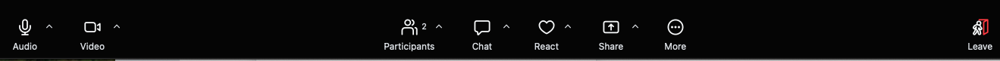
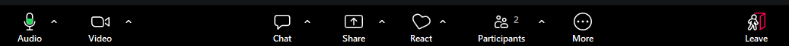

Teaching Codealongs in Zoom
Why online?
- Proliferation of resources during the pandemic
- We now serve three sites, 1 to 3 hours apart, plus each campus can be large
- Research groups and offices on south, main, and north Norman campus too
- Disability and caregiver accessibility
Ideas for preparation and organizing your space
- Second monitor, hypothes.is annotations
- Tablet (talk to LTP if you work at OU Libraries, in Norman can check out iPad from Bizzell circulation too)
- Paper versions (make sure your copy is up to date)
Timing
- Do not skip breaks!
- People’s distance to break areas will vary wildly online
- Pausing after “what questions do you have?” needs to be longer, to allow folks to type or unmute
- Count or time it, 10 to 20 seconds
- Better to cover less material, than more in a hurry (quality not quantity)
Checking in with learners is a key part of Carpentries pedagogy in any format
- Always do interaction (code-along) and conduct expectations, and roles introductions (who are helpers)
- Ice breakers in 1 hour is usually too much time
- Check-ins are still key!
Know your tools
You can’t rely on watching everyone’s faces
- Requiring screens on is fatiguing for many learners and can disproportionately affect some demographics
- Impact varies by person, so let learners decide for themselves
You still need to have your video on, if at all possible
- Lip reading
- Stop video if
- Internet is unstable for you
- Many learners mention slow connections
Communicating with the learners
- Etherpad (beware monitoring two chats)
- Zoom chat, polls
- Hand raise - sticky notes!!
Big check-ins
- Continue to use general “What questions do you have?” and “can I clarify anything or re-explain something?” with longer pauses
Frequent small check-ins
- Ask defined questions that can be answered in chat or with raised hands (yes or no)
- Less informative
- “Does that make sense?”
- “Do you understand?”
- More informative
- “Paste code to answer this challenge” (chat)
- “Raise your hand when you’ve completed the highlighted code” (sticky analogs)
- “Paste your error and code into the chat if it doesn’t work for you”
- Less informative
- Suggestion: Ask more often than in person, because it’s harder to catch people up individually
Avoid breakout rooms unless you’re having a discussion
- Ensure you have at least one helper who can troubleshoot via chat (Carpentries ratio of helpers to learners)
- Ask permission before having someone with difficulties share their screen
- Still do not take over, give verbal instructions on where to click, type, etc
- Thank them for helping and re-iterate how everyone has similar problems in every workshop (“encourage a growth mindset”)
- Tips for breakout room discussions from CMU
- The biggest point is have a specific task or goal!
Practice being co-host
- Lower hands
- Assign people to breakout room
- See who’s messaging you private vs everyone
Sticky notes = “raise hand”


- React is a heart icon
- This button disappears when you share your screen, so you will not be able to see it while you are presenting
- Ask learners to use the “raise hand” reaction as it stays in place, unlike the emoji reactions.
- Compactly viewed via “Participants” panel (versus gallery of faces)
Common problems
Listed in “Interacting with your learners”
- Etherpad versus zoom chat
- Overly active chat (in big workshops)
- Hesitation to interrupt by learners
Summary
- Even more frequent check-ins, use hand raise
- Have a separate screen or notes
- Have a helper if you have more than half a dozen people
We’re doing this for the learners
- Teaching is a skill
- Online teaching is a skill you can improve too